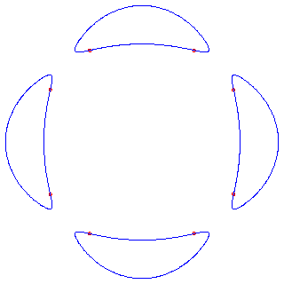
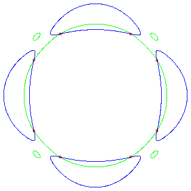

Up: 3.ii. Enumerative problems not involving general conditions
Hilbert's Quartic and its Hessian


On the left, we display Hilbert's quartic and on the right, we display this
with its Hessian curve, drawn in Green.
Note that the flexes occur at the intersection of the two curves.